Gemma 4 E2B (2.3B effective parameters, on a laptop) builds a NodeGX page by answering small typed questions. Then the agent looks at what it built, says what is wrong, repairs only that, and keeps the repair only if the page got better. It ran on six briefs it had never seen, not only the puppy page it was tuned on.
Session 1 ran on 28 October 2026. Session 2 (29 October) changed what counts as "better" and tested the change on 24 paired runs.
The loop
BuildEvery answer goes through one door. A cached answer replays for free, so a repair round re-asks only what was flagged.
Renderrender_report screenshots the page and lists what it measures (contrast, overflow, overlaps).
DescribeThe script writes each section out in words, top to bottom, the way a reader meets it.
CritiqueScript rules over the graph, render findings mapped to their node, and a reviewer model answering yes/no in one token.
RepairRe-word one line with the reason, re-ask a section's parts, flip a decision to the model's own second choice, add or drop a section.
AcceptSession 1: the round's score had to beat the best so far. Session 2: fewer defects per line, and organisation may not fall by more than 0.1. If not, the agent restores the best round's answers and marks the fix as tried.
What a small model can judge
Before building the loop, each kind of judgement was measured against pairs where the right answer is known. P(yes) comes from the reviewer's token probabilities, with no sampling.
Question
Bad case
Good case
Verdict
Two page screenshots: which is better? (E2B and E4B)
picks the second picture every time, in both orders
unusable
Score a section crop 1–5 (E2B)
2.92 (man's face hero)
2.01 (dog hero)
noise
Section in words: does the headline cover the whole section? (E4B)
0.31
1.00
sharp
Section in words: does every line read like a real business wrote it? (E4B)
0.09 (cut-off button)
0.96
sharp
Same, testimonial about pizza on a puppy page (E4B)
0.01
0.99
sharp
One photo: does it fit this page? (E4B, puppy page)
0.01 (cat)
0.98 (dog)
sharp
Same question (E2B)
0.79 (cat)
0.99 (dog)
says yes to everything
So the reviewer reads words, and looks at one photo at a time, never a whole page. The 2B model builds; a 4B model reviews, answering one token per question.
What we found
Every first build improved under review.Defects per line of copy fell from 0.60 to 0.17 across six briefs. When a repair round made the page worse, the agent saw it and reverted.
Group the words by what has to agree; split everything else.On identical page structures, one copy call per section beat one call per line: 26% fewer word issues, the reviewer's "sounds real" up from 0.82 to 0.89, and 72% fewer copy calls. "As small as possible" is the right target for decisions, not for words.
The model's decisions are worth a lot, and a defect count cannot see it.With every structural choice made at random, pages had fewer parts and so fewer defects, and won on the raw score six times out of six. A reviewer reading the page outline prefers the model's pages (well organised 0.66 against 0.50). So quality has to be judged on its own, and kept as a condition for accepting a round.
The harness can learn its own rules.From its ledgers it found ten questions the model always answers the same way with p ≥ 0.9 (the hero headline is the display headline, every main button is the filled one), and stopped asking them. More useful is the list of questions it never settles: alignment, the band behind a section, where the photo goes. Those are where design rules belong.
The model's confidence is free, and it says which questions to stop asking.Ollama returns token probabilities even under a JSON schema. A button's look comes back at p ≈ 0.99 every time, while "photo beside, above or below?" averages 0.48. The first is a rule the harness can learn; the second is where to explore.
Upstream words poison downstream words.A section's one-line purpose ("introduce the Puppy Haven concept") turned into labels like "Puppy Haven Landing Page Concept: Blue, Modern Style". Without it, 8 of 8 labels were clean. Small calls need the smallest context, not just a short one.
A schema length cap cuts the model off mid-word.OWN-027's truncated button ("Step 1: Apply Online. Fill a") was the harness, not the model. The limit belongs in the prompt's words; the critic catches what runs long.
Repair fixes slips, not bad questions.When a prompt itself induced a defect, re-asking with a hint returned the same defect. That is worth knowing: the loop finds what to fix in the harness, too.
The score is only as good as the critics' reach.A page that scored 4 still had two contact forms and "Find your perfect…" ten times. Each blind spot became a cheap script critic.
Session 2 · 29 October 2026
What counts as better
In session 1 a round was kept when its weighted defect score went down. The random-decisions control showed the problem with that: fewer defects can pay for a page that is worse organised. Session 2 made the session-1 winners the defaults (one copy call per section, the contradiction check, the outline judges) and put a new rule in front of the old one.
Kept, way 1Defects per line fall, and "well organised" drops by no more than 0.1.
Kept, way 2"Well organised" rises by at least 0.1, and defects per line stay within 110% of the best.
24 paired runs
For each brief, one build with no review made the decisions. Four runs then started from exactly those decisions, so they built the same sections, parts and bands and only their words differed. Two kept rounds by the new rule, two by the old sum. Each cell is the kept page: defects per line · well organised (lower is better, then higher is better).
brief
new rule, run 1
new rule, run 2
old sum, run 1
old sum, run 2
puppy
0.28 · 0.85
0.03 · 0.94
0.24 · 0.93
0.15 · 0.80
bakery
0.26 · 0.87
0.38 · 0.77
0.17 · 0.58
0.23 · 0.77
running
0.32 · 0.74
0.40 · 0.39
0.46 · 0.26
0.24 · 0.23
jazz
0.24 · 0.14
0.23 · 0.11
0.21 · 0.11
0.08 · 0.18
pottery
0.04 · 0.93
0.00 · 0.97
0.03 · 0.97
0.00 · 0.94
plumber
0.22 · 0.87
0.10 · 0.93
0.10 · 0.78
0.11 · 0.87
mean, 12 runs
0.21 · 0.71(round 0: 0.53 · 0.58)
0.17 · 0.62(round 0: 0.56 · 0.47)
Both rules repair.Defects per line fall by more than half under either rule, and "well organised" rises under both.
The trade is the expected one, and small.The old sum ends with fewer defects per line; the new rule ends better organised. Both differences are smaller than the spread between two runs of the same rule, so this is a decision about which pages to refuse, not a measured win.
The new rule stays the default.It refuses the page you would refuse (below).
It has a ratchet.It compares each round with the last kept round, so a page can lose a little organisation at every step: the bakery's second run went 0.90 → 0.80 → 0.77, each step inside the limit. The fix is to compare with the best organisation any kept round reached.
Both start from the same sections, parts and bands. The old sum kept a round where organisation had fallen from 0.92 to 0.58, because the defects per line kept falling; on that page the gallery became a full-bleed photo that runs across its own heading. The new rule refused the same kind of trade in its own run: round 3 had fewer defects (0.20 per line) but organisation fell to 0.69, so the agent went back to round 2.
The organisation judge reads the words, not only the outline
The five runs of each brief share one structure; only round 0's words were written afresh. The reviewer answers at temperature 0, so this is not sampling noise: new words on the same outline move its answer by up to 0.6.
brief
"well organised", five samples of words
range
puppy
0.13 0.74 0.21 0.36 0.60
0.61
plumber
0.92 0.92 0.78 0.48 0.53
0.44
running
0.39 0.05 0.39 0.05 0.04
0.35
bakery
0.84 0.83 0.90 0.92 0.65
0.27
pottery
0.87 0.92 0.96 0.93 0.92
0.09
jazz
0.15 0.16 0.10 0.08 0.08
0.08
On four briefs that is more than the 0.1 the rule guards, so the rule partly guards wording. Jazz is low whatever the words: the judge dislikes that structure. Next: a second judge that sees the outline with the words taken out (section kinds, parts, bands), and the rule applied to that one.
Two new checks
A list repeated across sections.It fired on all four bakery runs and one puppy run, and it is right: the call to action repeats the feature cards (sourdough, croissants, cakes). Rewording cannot clear it, because the brief names only three products, so the model writes the same three again. The repair has to be structural: take the list out of the later section.
Prices that disagree.It never fired: every kept page uses one currency. But the jazz page still says "Tickets from $45" above a $35 ticket, which this check does not compare. Next: a "from $X" line must equal the cheapest item.
The photo scout asks two questions
"Would this photo make sense on a page for …" invites yes: in session 1 the running page kept a dog and some sheep. A second question, "does this photo show what this page is about?", worded with the page's own name and what it must show, stops them. The library has no runner, band or plumber photo, so for those pages the right answer is no photo, and that is what the scout now gives.
brief
kept (makes sense · shows the subject)
passed the first question, stopped by the second
puppy
dog 0.98 · 0.85
none
bakery
bakery 0.94 · 0.97, bread 0.87 · 0.95
none
running
none
carpenter 0.72 · 0.004, coast 0.98 · 0.003, forest fog 0.94 · 0.003, horse 0.90 · 0.003and 4 more
Fix the ratchet.Compare with the best organisation any kept round reached.
Judge organisation without the words.Section kinds, parts and bands only, with its spread measured the same way.
Repairs that work for the two new checks.Drop a repeated list from the later section; check "from $X" against the cheapest item.
Freeze the harness for OWN-030.The same 2B model and briefs, built through NodeGX, as plain HTML from the same answers, and by the model writing code. You rank the pages blind.
Session 2 pages, before and after review
The first run of the new rule on each brief. Each frame scrolls. Left: round 0. Right: the round the agent kept.
puppy
“Make me a puppy adoption landing page please, blue colour theme, modern style.”
defects per line by round
0.66 → 0.309 → 0.333 → 0.383 → 0.278
kept
round 4
builder calls
48
reviewer tokens
70
free replays
315
minutes
7.2
Photos the reviewer kept: —. Facts it set itself to show: —.
Round 0 0.66 /line · organised 0.74
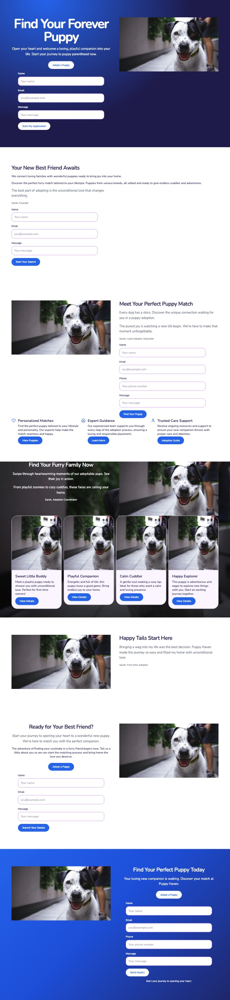
Round 4, kept 0.28 /line · organised 0.85
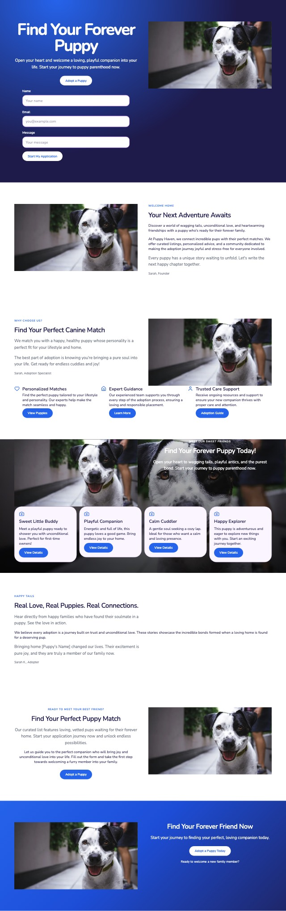
What the agent found in round 0, and what it fixed (9 of 15)
fixed the list in "gallery" shows the same photo 4 times re-ask a decision
still open "animal-dog.webp" appears 10 times on the page re-ask a decision
fixed "animal-dog.webp" appears 10 times on the page re-ask a decision
still open "animal-dog.webp" appears 10 times on the page re-ask a decision
still open "animal-dog.webp" appears 10 times on the page re-ask a decision
fixed "Adopt a Puppy" repeats "Adopt a Puppy" re-word a line
fixed "Adopt a Puppy" repeats "Adopt a Puppy" re-word a line
fixed a second form (already in "hero") re-ask a decision
fixed a second form (already in "hero") re-ask a decision
fixed a second form (already in "hero") re-ask a decision
fixed a second form (already in "hero") re-ask a decision
fixed a quote in a 3th section re-ask a decision
still open a quote in a 4th section re-ask a decision
still open reviewer: organised p=0.74
still open reviewer: type and parts suit p=0.911
The page in words, as the reviewer read it (round 4)
Section "hero" (dark band). Top to bottom:
- headline: "Find Your Forever Puppy"
- sub-line: "Open your heart and welcome a loving, playful companion into your life. Start your journey to puppy parenthood now."
- button: "Adopt a Puppy"
- a form field: "Name" / "Your name"
- a form field: "Email" / "you@example.com"
- a form field: "Message" / "Your message"
- button: "Start My Application"
- a photo (animal-dog.webp)
Section "about" (light band). Top to bottom:
- a photo (animal-dog.webp)
- eyebrow: "Welcome Home"
- headline: "Your Next Adventure Awaits"
- sub-line: "Discover a world of wagging tails, unconditional love, and heartwarming friendships with a puppy who's ready for their forever family."
- paragraph: "At Puppy Haven, we connect incredible pups with their perfect matches. We offer curated listings, personalized advice, and a community dedicated to making the adoption journey joyful and stress-free for everyone involved."
- quote: "Every puppy has a unique story waiting to unfold. Let's write the next happy chapter together."
- who said it: a name and a role: "Sarah, Founder"
Section "feature cards" (light band). Top to bottom:
- eyebrow: "Why Choose Us?"
- headline: "Find Your Perfect Canine Match"
- sub-line: "We match you with a happy, healthy puppy whose personality is a perfect fit for your lifestyle and home."
- quote: "The best part of adoption is knowing you're bringing a pure soul into your life. Get ready for endless cuddles and joy!"
- who said it: a name and a role: "Sarah, Adoption Specialist"
- a photo (animal-dog.webp)
- 3 featureItems in a grid, each: icon, title, sentence or two, button:
1. "Personalized Matches" — "Find the perfect puppy tailored to your lifestyle and personality. Our experts help make the match seamless and happy." — "View Puppies"
2. "Expert Guidance" — "Our experienced team supports you through every step of the adoption process, ensuring a loving and responsible placement." — "Learn More"
3. "Trusted Care Support" — "Receive ongoing resources and support to ensure your new companion thrives with proper care and attention." — "Adoption Guide"
Section "gallery" (dark band). Top to bottom:
- a photo (animal-dog.webp)
- eyebrow: "Meet Our Sweet Friends"
- headline: "Find Your Forever Puppy Today!"
- sub-line: "Open your heart to wagging tails, playful antics, and the purest bond. Start your journey to puppy parenthood now."
- 4 cards in a grid, each: icon, title, sentence or two, button:
1. "Sweet Little Buddy" — "Meet a playful puppy ready to shower you with unconditional love. Perfect for first-time owners!" — "View Details"
2. "Playful Companion" — "Energetic and full of life, this puppy loves a good game. Bring endless joy to your home." — "View Details"
3. "Calm Cuddler" — "A gentle soul seeking a cozy lap. Ideal for those who want a calm and loving presence." — "View Details"
4. "Happy Explorer" — "This puppy is adventurous and eager to explore new things with you. Start an exciting journey together." — "View Details"
Section "testimonials" (light band). Top to bottom:
- eyebrow: "Happy Tails"
- headline: "Real Love, Real Puppies. Real Connections."
- sub-line: "Hear directly from happy families who have found their soulmate in a puppy. See the love in action."
- paragraph: "We believe every adoption is a journey built on trust and unconditional love. These stories showcase the incredible bonds formed when a loving home is found for a deserving pup."
- quote: "Bringing home [Puppy's Name] changed our lives. Their excitement is pure joy, and they are truly a member of our family now."
- who said it: a name and a role: "Sarah K., Adopter"
Section "sign-up or contact form" (light band). Top to bottom:
- eyebrow: "Ready to meet your best friend?"
- headline: "Find Your Perfect Puppy Match"
- sub-line: "Our curated list features loving, vetted pups waiting for their forever home. Start your application journey now and unlock endless possibilities."
- paragraph: "Let us guide you to the perfect companion who will bring joy and unconditional love into your life. Fill out the form and take the first step towards welcoming a furry member into your family."
- button: "Adopt a Puppy"
- a photo (animal-dog.webp)
Section "call to action" (dark band). Top to bottom:
- a photo (animal-dog.webp)
- headline: "Find Your Forever Friend Now"
- sub-line: "Start your journey to finding your perfect, loving companion today."
- button: "Adopt a Puppy Today"
- small print: "Ready to welcome a new family member?"
bakery
“A one-page site for our family bakery in Lyon. Warm colours. We sell sourdough, croissants and cakes, open Tuesday to Sunday.”
defects per line by round
0.83 → 0.425 → 0.257 → 0.198 → 0.267
kept
round 2
builder calls
50
reviewer tokens
97
free replays
315
minutes
7.3
Photos the reviewer kept: —. Facts it set itself to show: —.
Round 0 0.83 /line · organised 0.83
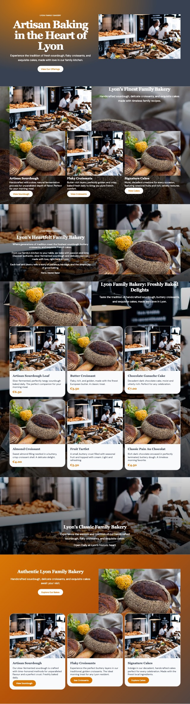
Round 2, kept 0.26 /line · organised 0.87
What the agent found in round 0, and what it fixed (15 of 23)
fixed the list in "gallery" shows the same photo 3 times re-ask a decision
fixed the list in "call to action" shows the same photo 2 times re-ask a decision
fixed the list in "feature cards" shows the same photo 2 times re-ask a decision
fixed "food-bread.webp" appears 9 times on the page re-ask a decision
fixed "food-bread.webp" appears 9 times on the page re-ask a decision
still open "food-bread.webp" appears 9 times on the page re-ask a decision
fixed "Lyon Family Bakery" repeats "Lyon Family Bakery" re-word a line
still open "Artisan Sourdough" repeats "Artisan Sourdough" re-word a line
fixed three dark bands in a row flip to 2nd choice
fixed three dark bands in a row flip to 2nd choice
fixed three dark bands in a row flip to 2nd choice
fixed three dark bands in a row flip to 2nd choice
still open "lyon family bakery" is said 4 times on the page re-word a line
fixed "lyon family bakery" is said 4 times on the page re-word a line
fixed "croissants and exquisite" is said 6 times on the page re-word a line
still open "croissants and exquisite" is said 6 times on the page re-word a line
fixed four "imageGround" bands in a row flip to 2nd choice
still open the "gallery" list repeats the items of "feature cards" ("Artisan Sourdough Loaf", "Butter Croissant", "Chocolate Ganache Cake", "Almond Croissant") re-word a line
still open the "call to action" list repeats the items of "feature cards" ("Artisan Sourdough", "Flaky Croissants", "Signature Cakes") re-word a line
fixed reviewer (p=0.821): "Open Daily at Lyon's historic heart." contradicts the request or invents a detail re-word a line
fixed reviewer (p=0.73): add a "location and hours" section add a section
still open reviewer: organised p=0.828
still open reviewer: type and parts suit p=0.878
The page in words, as the reviewer read it (round 2)
Section "hero" (dark band). Top to bottom:
- eyebrow: "Lyon Family Bakery"
- headline: "Artisan Baking in the Heart of Lyon"
- sub-line: "Experience the tradition of fresh sourdough, flaky croissants, and exquisite cakes, made with love in our family kitchen."
- button: "View Our Offerings"
- a photo (food-bakery.webp)
Section "feature cards" (light band). Top to bottom:
- a photo (food-bread.webp)
- headline: "Lyon's Finest Family Bakery"
- sub-line: "Handcrafted sourdough, delicate croissants, and exquisite cakes made with timeless family recipes."
- 3 featureItems in a grid, each: icon, title, sentence or two, button:
1. "Artisan Sourdough" — "Handcrafted with a slow, natural fermentation process for unparalleled depth of flavor. Perfect for your morning meal." — "View Sourdough"
2. "Flaky Croissants" — "Butter-rich layers, perfectly golden and crisp, baked fresh daily to bring you pure French comfort." — "View Croissants"
3. "Signature Cakes" — "Moist, decadent creations for every occasion, featuring seasonal fruits and rich, velvety textures." — "View Cakes"
Section "about" (light band). Top to bottom:
- eyebrow: "Lyon's Family Bakery"
- headline: "Timeless Baking, Warm Hearts."
- sub-line: "Generations of passion baked into every loaf, serving the soul of Lyon with authentic sourdough and exquisite treats."
- paragraph: "At our bakery, we honor the slow, careful craft. From the first rise of our sourdough to the delicate layers of a perfect croissant, we bring the comforting warmth of a true family kitchen to your table."
- quote: "Taste the difference tradition makes; a moment of pure, handcrafted joy in every bite."
- who said it: a name and a role: "Chef Antoine, Head Baker"
Section "gallery" (light band). Top to bottom:
- headline: "Artisan Breads & Sweet Delights in Lyon"
- sub-line: "Experience authentic family baking, featuring slow-fermented sourdough, flaky croissants, and exquisite cakes."
- a photo (food-bakery.webp)
- 6 cards in a grid, each: icon, title, sentence or two, price:
1. "Classic Sourdough Loaf" — "Our slow-fermented sourdough, perfect for dipping or spreading. Made with family recipes and the finest local flour." — "€5.50"
2. "Butter Croissant Trio" — "Light, airy, and perfectly laminated. Experience the true taste of a Lyon morning with our buttery delights." — "€3.90"
3. "Rich Chocolate Cake" — "Decadent dark chocolate cake layered with rich ganache. A perfect indulgence for any occasion." — "€7.50"
4. "Seasonal Fruit Tart" — "Delicate pastry filled with fresh, seasonal fruit. A sweet, vibrant treat perfect for afternoon tea." — "€6.20"
5. "Pain de Campagne" — "Our rustic, hearty country bread. Naturally leavened and baked daily for authentic flavor." — "€4.00"
6. "Velvet Éclair" — "Creamy pastry filled with vanilla bean cream. A timeless, elegant dessert for sweet moments." — "€4.50"
Section "schedule or line-up" (dark band). Top to bottom:
- headline: "Your Daily Bread Awaits in Lyon"
- sub-line: "Handcrafted sourdough, flaky croissants, and exquisite cakes daily."
- date and place: "Open Tuesday through Sunday at our Lyon home."
Section "location and hours" (light band). Top to bottom:
- eyebrow: "Lyon Local Bakery"
- headline: "Your Family's Lyon Bakery"
- sub-line: "Dedicated to traditional sourdough, buttery croissants, and beautiful cakes."
- date and place: "Open daily, serving you the best of Lyon's artisan ovens."
Section "call to action" (dark band). Top to bottom:
- a photo (food-bakery.webp)
- headline: "Taste the Heart of Lyon Baking"
- sub-line: "Authentic sourdough, delicate croissants, and cherished cakes, crafted for your family."
- button: "See Our Treats"
- 3 cards in a grid, each: icon, title, sentence or two, button:
1. "Artisan Sourdough Loaves" — "Our slow-fermented sourdough, crafted with love in Lyon, is the perfect accompaniment to your morning coffee or evening meal. Experience the authentic, tangy flavor." — "See Sourdough"
2. "Flaky Butter Croissants" — "Golden, buttery croissants, laminated daily for unparalleled crispness. The ultimate French indulgence awaits you this weekend." — "View Croissants"
3. "Signature Decadent Cakes" — "From rich chocolate ganache to delicate fruit tarts, discover our handcrafted cakes. Perfect for any celebration or quiet treat." — "Explore Cakes"
running
“A sign-up page for a Saturday morning running club in the park. Energetic, green.”
defects per line by round
0.618 → 0.449 → 0.321 → 0.296 → 0.318
kept
round 2
builder calls
34
reviewer tokens
84
free replays
218
minutes
6.1
Photos the reviewer kept: —. Facts it set itself to show: —.
Round 0 0.62 /line · organised 0.05
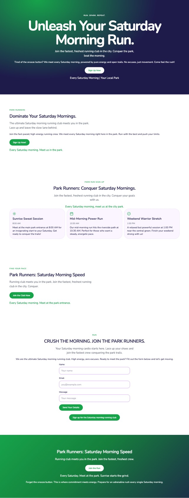
Round 2, kept 0.32 /line · organised 0.74
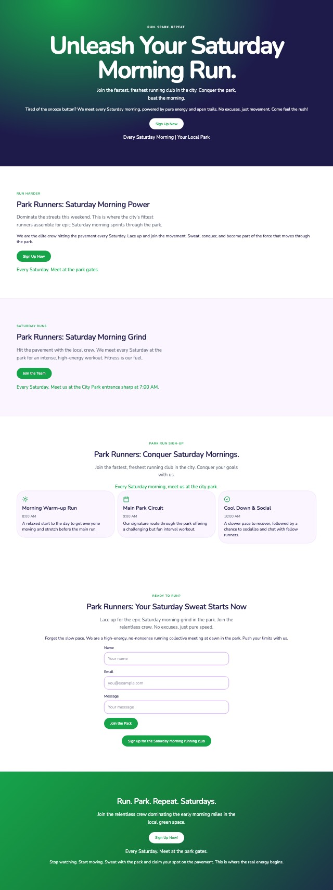
What the agent found in round 0, and what it fixed (9 of 15)
fixed "A relaxed but powerful session at 1:00 PM near the central green. Finish your weekend strong with us!" talks about the page's styling ("green") re-word a line
still open button "Sign up for the Saturday morning running club" is too long for a button re-word a line
still open "Park Runners: Saturday Morning Speed" repeats "Park Runners: Saturday Morning Speed" re-word a line
fixed "join the fastest" is said 5 times on the page re-word a line
fixed "join the fastest" is said 5 times on the page re-word a line
fixed "join the fastest" is said 5 times on the page re-word a line
fixed "every saturday morning" is said 6 times on the page re-word a line
fixed "every saturday morning" is said 6 times on the page re-word a line
fixed four "band" bands in a row flip to 2nd choice
fixed reviewer (p=0.117): weakest line sub-line "Running club meets you in the park. Join the faste" re-word a line
still open reviewer (p=0.14): weakest line sub-line "Your Saturday morning cardio starts here. Lace up " re-word a line
still open reviewer (p=0.275): weakest line paragraph "Forget the snooze button. This is where commitment" re-word a line
fixed reviewer (p=0.813): drop section 2. about drop a section
still open reviewer: organised p=0.054 re-ask a decision
still open reviewer: type and parts suit p=0.774
The page in words, as the reviewer read it (round 2)
Section "hero" (dark band). Top to bottom:
- eyebrow: "RUN. SPARK. REPEAT."
- headline: "Unleash Your Saturday Morning Run."
- sub-line: "Join the fastest, freshest running club in the city. Conquer the park, beat the morning."
- paragraph: "Tired of the snooze button? We meet every Saturday morning, powered by pure energy and open trails. No excuses, just movement. Come feel the rush!"
- button: "Sign Up Now"
- date and place: "Every Saturday Morning | Your Local Park"
Section "about" (light band). Top to bottom:
- eyebrow: "Run Harder"
- headline: "Park Runners: Saturday Morning Power"
- sub-line: "Dominate the streets this weekend. This is where the city's fittest runners assemble for epic Saturday morning sprints through the park."
- paragraph: "We are the elite crew hitting the pavement every Saturday. Lace up and join the movement. Sweat, conquer, and become part of the force that moves through the park."
- button: "Sign Up Now"
- date and place: "Every Saturday. Meet at the park gates."
Section "location and hours" (light band). Top to bottom:
- eyebrow: "Saturday Runs"
- headline: "Park Runners: Saturday Morning Grind"
- sub-line: "Hit the pavement with the local crew. We meet every Saturday at the park for an intense, high-energy workout. Fitness is our fuel."
- button: "Join the Team"
- date and place: "Every Saturday. Meet us at the City Park entrance sharp at 7:00 AM."
Section "schedule or line-up" (light band). Top to bottom:
- eyebrow: "Park Run Sign-Up"
- headline: "Park Runners: Conquer Saturday Mornings."
- sub-line: "Join the fastest, freshest running club in the city. Conquer your goals with us."
- date and place: "Every Saturday morning, meet us at the city park."
- 3 cards in a grid, each: icon, title, time or date, sentence or two:
1. "Morning Warm-up Run" — "8:00 AM" — "A relaxed start to the day to get everyone moving and stretch before the main run."
2. "Main Park Circuit" — "9:00 AM" — "Our signature route through the park offering a challenging but fun interval workout."
3. "Cool Down & Social" — "10:00 AM" — "A slower pace to recover, followed by a chance to socialize and chat with fellow runners."
Section "sign-up or contact form" (light band). Top to bottom:
- eyebrow: "Ready to Run?"
- headline: "Park Runners: Your Saturday Sweat Starts Now"
- sub-line: "Lace up for the epic Saturday morning grind in the park. Join the relentless crew. No excuses, just pure speed."
- paragraph: "Forget the slow pace. We are a high-energy, no-nonsense running collective meeting at dawn in the park. Push your limits with us."
- a form field: "Name" / "Your name"
- a form field: "Email" / "you@example.com"
- a form field: "Message" / "Your message"
- button: "Join the Pack"
- button: "Sign up for the Saturday morning running club"
Section "call to action" (dark band). Top to bottom:
- headline: "Run. Park. Repeat. Saturdays."
- sub-line: "Join the relentless crew dominating the early morning miles in the local green space."
- button: "Sign Up Now!"
- date and place: "Every Saturday. Meet at the park gates."
- paragraph: "Stop watching. Start moving. Sweat with the pack and claim your spot on the pavement. This is where the real energy begins."
jazz
“A page for a jazz evening on 14 November at The Blue Room: the line-up, tickets and how to get there. Dark and elegant.”
defects per line by round
0.407 → 0.371 → 0.401 → 0.237 → 0.265
kept
round 3
builder calls
61
reviewer tokens
99
free replays
269
minutes
6.7
Photos the reviewer kept: —. Facts it set itself to show: —.
Round 0 0.41 /line · organised 0.16
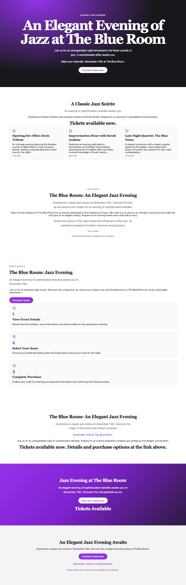
Round 3, kept 0.24 /line · organised 0.14
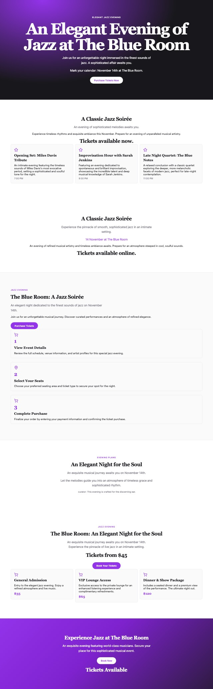
What the agent found in round 0, and what it fixed (6 of 12)
still open "The Blue Room: An Elegant Jazz Evening" repeats "The Blue Room: An Elegant Jazz Evening" re-word a line
fixed "An elegant evening of sophisticated melodies awaits you on November 14th. Discover the unforgettable sound." repeats "An elegant evening of sophisticated melodies awaits you on November 14th." re-word a line
fixed "Purchase Tickets Now" repeats "Purchase Tickets Now" re-word a line
still open "elegant jazz evening" is said 4 times on the page re-word a line
fixed "elegant jazz evening" is said 4 times on the page re-word a line
still open "at the blue" is said 6 times on the page re-word a line
fixed "evening of sophisticated" is said 4 times on the page re-word a line
fixed four "band" bands in a row flip to 2nd choice
still open render: single-column-grid
fixed reviewer (p=0.779): add a "menu or prices" section add a section
still open reviewer: organised p=0.161 re-ask a decision
still open reviewer: type and parts suit p=0.921
The page in words, as the reviewer read it (round 3)
Section "hero" (dark band). Top to bottom:
- eyebrow: "Elegant Jazz Evening"
- headline: "An Elegant Evening of Jazz at The Blue Room"
- sub-line: "Join us for an unforgettable night immersed in the finest sounds of jazz. A sophisticated affair awaits you."
- date and place: "Mark your calendar: November 14th at The Blue Room."
- button: "Purchase Tickets Now"
Section "schedule or line-up" (light band). Top to bottom:
- headline: "A Classic Jazz Soirée"
- sub-line: "An evening of sophisticated melodies awaits you."
- paragraph: "Experience timeless rhythms and exquisite ambiance this November. Prepare for an evening of unparalleled musical artistry."
- price: "Tickets available now."
- 3 cards in a grid, each: icon, title, sentence or two, time or date:
1. "Opening Set: Miles Davis Tribute" — "An intimate evening featuring the timeless sounds of Miles Davis's most evocative period, setting a sophisticated and soulful tone for the night." — "7:00 PM"
2. "Improvisation Hour with Sarah Jenkins" — "Featuring an evening dedicated to spontaneous and brilliant improvisation, showcasing the incredible talent and deep musical knowledge of Sarah Jenkins." — "9:30 PM"
3. "Late Night Quartet: The Blue Notes" — "A relaxed conclusion with a classic quartet exploring the deeper, more melancholic facets of modern jazz, perfect for late-night contemplation." — "11:00 PM"
Section "location and hours" (light band). Top to bottom:
- headline: "A Classic Jazz Soirée"
- sub-line: "Experience the pinnacle of smooth, sophisticated jazz in an intimate setting."
- date and place: "14 November at The Blue Room"
- paragraph: "An evening of refined musical artistry and timeless ambiance awaits. Prepare for an atmosphere steeped in cool, soulful sounds."
- price: "Tickets available online."
Section "how it works" (light band). Top to bottom:
- eyebrow: "Jazz Evening"
- headline: "The Blue Room: A Jazz Soirée"
- sub-line: "An elegant night dedicated to the finest sounds of jazz on November 14th."
- paragraph: "Join us for an unforgettable musical journey. Discover curated performances and an atmosphere of refined elegance."
- button: "Purchase Tickets"
- 3 cards in a single column, each: icon, step number, title, sentence or two:
1. "1" — "View Event Details" — "Review the full schedule, venue information, and artist profiles for this special jazz evening."
2. "2" — "Select Your Seats" — "Choose your preferred seating area and ticket type to secure your spot for the night."
3. "3" — "Complete Purchase" — "Finalize your order by entering your payment information and confirming the ticket purchase."
Section "gallery" (light band). Top to bottom:
- eyebrow: "Evening Plans"
- headline: "An Elegant Night for the Soul"
- sub-line: "An exquisite musical journey awaits you on November 14th."
- quote: "Let the melodies guide you into an atmosphere of timeless grace and sophisticated rhythm."
- who said it: a name and a role: " curator: This evening is crafted for the discerning ear."
Section "menu or prices" (light band). Top to bottom:
- eyebrow: "Jazz Evening"
- headline: "The Blue Room: An Elegant Night for the Soul"
- sub-line: "An exquisite musical journey awaits you on November 14th. Experience the pinnacle of live jazz in an intimate setting."
- price: "Tickets from $45"
- button: "Book Your Tickets"
- 3 cards in a grid, each: icon, title, sentence or two, price:
1. "General Admission" — "Entry to the elegant jazz evening. Enjoy a refined atmosphere and live music." — "$35"
2. "VIP Lounge Access" — "Exclusive access to the private lounge for an enhanced listening experience and complimentary refreshments." — "$65"
3. "Dinner & Show Package" — "Includes a seated dinner and a premium view of the performance. The ultimate night out." — "$120"
Section "call to action" (dark band). Top to bottom:
- headline: "Experience Jazz at The Blue Room"
- sub-line: "An exquisite evening featuring world-class musicians. Secure your place for this sophisticated musical event."
- button: "Book Now"
- price: "Tickets Available"
pottery
“A portfolio page for a potter who sells handmade bowls and teaches weekend classes. Minimal, lots of white space.”
defects per line by round
0.307 → 0.149 → 0.07 → 0.035
kept
round 3
builder calls
20
reviewer tokens
64
free replays
221
minutes
4.2
Photos the reviewer kept: —. Facts it set itself to show: —.
Round 0 0.31 /line · organised 0.92
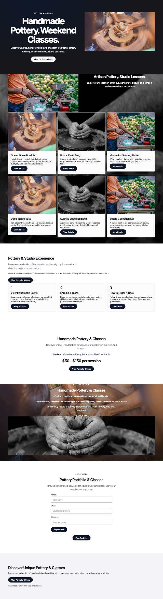
Round 3, kept 0.04 /line · organised 0.93
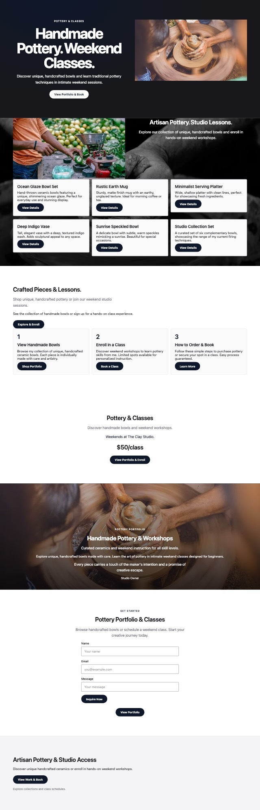
What the agent found in round 0, and what it fixed (8 of 11)
fixed the list in "gallery" shows the same photo 2 times re-ask a decision
fixed "work-hands-clay.webp" appears 3 times on the page re-ask a decision
fixed "View Portfolio & Book" repeats "View Portfolio & Book" re-word a line
still open "View Portfolio & Book" repeats "View Portfolio & Book" re-word a line
fixed "Handmade Pottery & Classes" repeats "Handmade Pottery & Classes" re-word a line
fixed "View Portfolio & Book" repeats "View Portfolio & Book" re-word a line
fixed "unique handcrafted bowls" is said 4 times on the page re-word a line
fixed "unique handcrafted bowls" is said 4 times on the page re-word a line
fixed "view portfolio book" is said 4 times on the page re-word a line
still open reviewer: organised p=0.924
still open reviewer: type and parts suit p=0.97
The page in words, as the reviewer read it (round 3)
Section "hero" (dark band). Top to bottom:
- eyebrow: "Pottery & Classes"
- headline: "Handmade Pottery. Weekend Classes."
- sub-line: "Discover unique, handcrafted bowls and learn traditional pottery techniques in intimate weekend sessions."
- button: "View Portfolio & Book"
- a photo (work-potter.webp)
Section "gallery" (dark band). Top to bottom:
- a photo (people-market.webp)
- headline: "Artisan Pottery. Studio Lessons."
- sub-line: "Explore our collection of unique, handcrafted bowls and enroll in hands-on weekend workshops."
- 6 cards in a grid, each: title, sentence or two, button:
1. "Ocean Glaze Bowl Set" — "Hand-thrown ceramic bowls featuring a unique, shimmering ocean glaze. Perfect for everyday use and stunning display." — "View Details"
2. "Rustic Earth Mug" — "Sturdy, matte finish mug with an earthy, unglazed texture. Ideal for morning coffee or tea." — "View Details"
3. "Minimalist Serving Platter" — "Wide, shallow platter with clean lines, perfect for showcasing fresh ingredients." — "View Details"
4. "Deep Indigo Vase" — "Tall, elegant vase with a deep, textured indigo wash. Adds sculptural appeal to any space." — "View Details"
5. "Sunrise Speckled Bowl" — "A delicate bowl with subtle, warm speckles mimicking a sunrise. Beautiful for special occasions." — "View Details"
6. "Studio Collection Set" — "A curated set of six complementary bowls, showcasing the range of my current firing techniques." — "View Details"
Section "how it works" (light band). Top to bottom:
- headline: "Crafted Pieces & Lessons."
- sub-line: "Shop unique, handcrafted pottery or join our weekend studio sessions."
- paragraph: "See the collection of handmade bowls or sign up for a hands-on class experience."
- button: "Explore & Enroll"
- 3 cards in a grid, each: step number, title, sentence or two, button:
1. "1" — "View Handmade Bowls" — "Browse my collection of unique, handcrafted ceramic bowls. Each piece is individually made with care and artistry." — "Shop Portfolio"
2. "2" — "Enroll in a Class" — "Discover weekend workshops to learn pottery skills from me. Limited spots available for personalized instruction." — "Book a Class"
3. "3" — "How to Order & Book" — "Follow these simple steps to purchase pottery or secure your spot in a class. Easy process guaranteed." — "Learn More"
Section "schedule or line-up" (light band). Top to bottom:
- headline: "Pottery & Classes"
- sub-line: "Discover handmade bowls and weekend workshops."
- date and place: "Weekends at The Clay Studio."
- price: "$50/class"
- button: "View Portfolio & Enroll"
Section "about" (dark band). Top to bottom:
- eyebrow: "Pottery Portfolio"
- headline: "Handmade Pottery & Workshops"
- sub-line: "Curated ceramics and weekend instruction for all skill levels."
- paragraph: "Explore unique, handcrafted bowls made with care. Learn the art of pottery in intimate weekend classes designed for beginners."
- quote: "Every piece carries a touch of the maker's intention and a promise of creative escape."
- who said it: a name and a role: "Studio Owner"
Section "sign-up or contact form" (light band). Top to bottom:
- eyebrow: "Get Started"
- headline: "Pottery Portfolio & Classes"
- sub-line: "Browse handcrafted bowls or schedule a weekend class. Start your creative journey today."
- a form field: "Name" / "Your name"
- a form field: "Email" / "you@example.com"
- a form field: "Message" / "Your message"
- button: "Inquire Now"
- button: "View Portfolio"
Section "footer" (light band). Top to bottom:
- headline: "Artisan Pottery & Studio Access"
- paragraph: "Discover unique handcrafted ceramics or enroll in hands-on weekend workshops."
- button: "View Work & Book"
- small print: "Explore collections and class schedules."
plumber
“A simple page for my plumbing business so customers can ask for a call-back. Trustworthy, blue.”
defects per line by round
0.595 → 0.278 → 0.278 → 0.222
kept
round 3
builder calls
13
reviewer tokens
56
free replays
194
minutes
3.5
Photos the reviewer kept: —. Facts it set itself to show: —.
Round 0 0.59 /line · organised 0.92
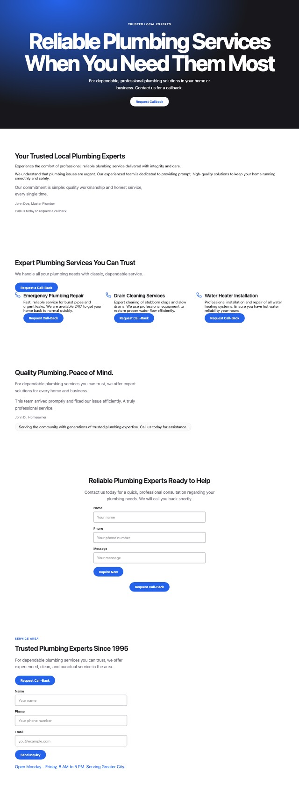
Round 3, kept 0.22 /line · organised 0.87
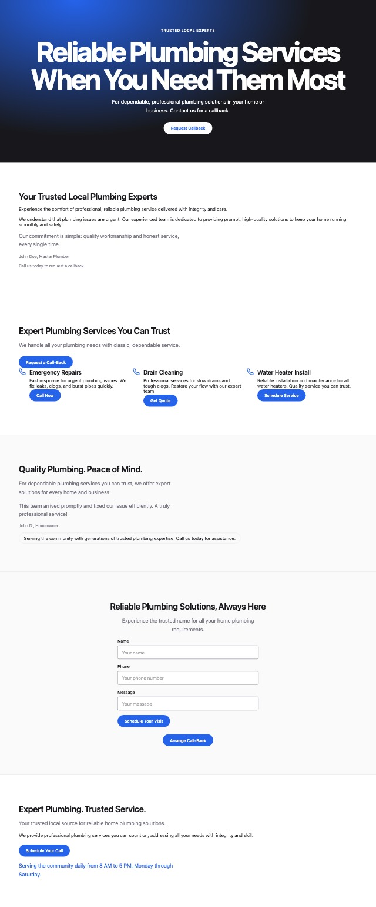
What the agent found in round 0, and what it fixed (7 of 10)
fixed "Request Call-Back" repeats "Request Callback" re-word a line
fixed "Request Call-Back" repeats "Request Callback" re-word a line
fixed "Request Call-Back" repeats "Request Callback" re-word a line
fixed a second form (already in "sign-up or contact form") re-ask a decision
fixed four "band" bands in a row flip to 2nd choice
fixed four "band" bands in a row flip to 2nd choice
fixed render: single-ground
still open render: minimum-layout-width
still open reviewer: organised p=0.918
still open reviewer: type and parts suit p=0.95
The page in words, as the reviewer read it (round 3)
Section "hero" (dark band). Top to bottom:
- eyebrow: "Trusted Local Experts"
- headline: "Reliable Plumbing Services When You Need Them Most"
- sub-line: "For dependable, professional plumbing solutions in your home or business. Contact us for a callback."
- button: "Request Callback"
Section "about" (light band). Top to bottom:
- headline: "Your Trusted Local Plumbing Experts"
- sub-line: "Experience the comfort of professional, reliable plumbing service delivered with integrity and care."
- paragraph: "We understand that plumbing issues are urgent. Our experienced team is dedicated to providing prompt, high-quality solutions to keep your home running smoothly and safely."
- quote: "Our commitment is simple: quality workmanship and honest service, every single time."
- who said it: a name and a role: "John Doe, Master Plumber"
- small print: "Call us today to request a callback."
Section "feature cards" (light band). Top to bottom:
- headline: "Expert Plumbing Services You Can Trust"
- sub-line: "We handle all your plumbing needs with classic, dependable service."
- button: "Request a Call-Back"
- 3 featureItems in a grid, each: icon, title, sentence or two, button:
1. "Emergency Repairs" — "Fast response for urgent plumbing issues. We fix leaks, clogs, and burst pipes quickly." — "Call Now"
2. "Drain Cleaning" — "Professional services for slow drains and tough clogs. Restore your flow with our expert team." — "Get Quote"
3. "Water Heater Install" — "Reliable installation and maintenance for all water heaters. Quality service you can trust." — "Schedule Service"
Section "testimonials" (light band). Top to bottom:
- headline: "Quality Plumbing. Peace of Mind."
- sub-line: "For dependable plumbing services you can trust, we offer expert solutions for every home and business."
- quote: "This team arrived promptly and fixed our issue efficiently. A truly professional service!"
- who said it: a name and a role: "John D., Homeowner"
- badge: "Serving the community with generations of trusted plumbing expertise. Call us today for assistance."
Section "sign-up or contact form" (light band). Top to bottom:
- headline: "Reliable Plumbing Solutions, Always Here"
- sub-line: "Experience the trusted name for all your home plumbing requirements."
- a form field: "Name" / "Your name"
- a form field: "Phone" / "Your phone number"
- a form field: "Message" / "Your message"
- button: "Schedule Your Visit"
- button: "Arrange Call-Back"
Section "location and hours" (light band). Top to bottom:
- headline: "Expert Plumbing. Trusted Service."
- sub-line: "Your trusted local source for reliable home plumbing solutions."
- paragraph: "We provide professional plumbing services you can count on, addressing all your needs with integrity and skill."
- button: "Schedule Your Call"
- date and place: "Serving the community daily from 8 AM to 5 PM, Monday through Saturday."
Session 1 · 28 October 2026
Every brief
Score is the weighted count of what the critics found (lower is better); the agent keeps a round only when it beats the best so far.
brief
round 0
kept
rounds
builder calls
reviewer
min
random decisions, round 0
organised: random / model r0
puppy
27.7
9.44
5
111
105
8.9
20.95
0.582 / 0.865
bakery
30.01
11.24
5
133
136
10.2
15.57
0.661 / 0.828
running
28.9
7.77
5
68
112
6.9
24.05
0.771 / 0.866
jazz
32.9
23.15
5
118
134
8.4
29.28
0.048 / 0.264
pottery
17.59
2.64
5
64
102
5.4
13.31
0.629 / 0.938
plumber
34.77
5.61
4
113
100
8.9
28.21
0.302 / 0.175
The control: random decisions
The same harness, the same words from the model, the same reviewer, but every structural choice (which parts, which grounds, how many items, the type pairing) drawn at random. On the defect score the random pages do as well or better, because they have 30–40% fewer parts to find fault with. To the eye it is not close.
jazz: random decisions score 8.01
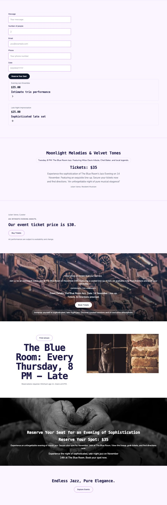
jazz: the model's decisions, round 0 score 27.84
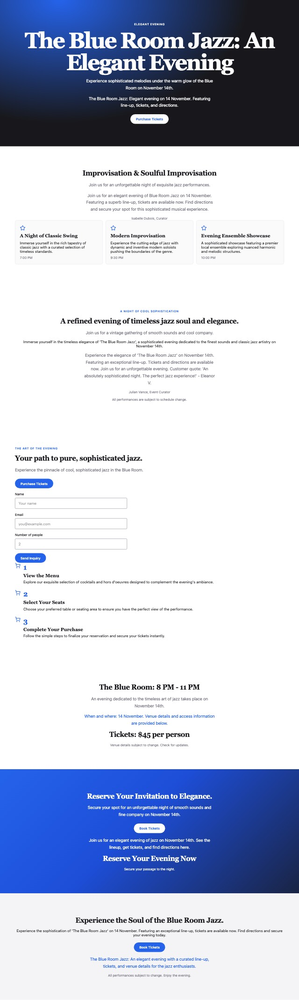
puppy: random decisions score 25.93
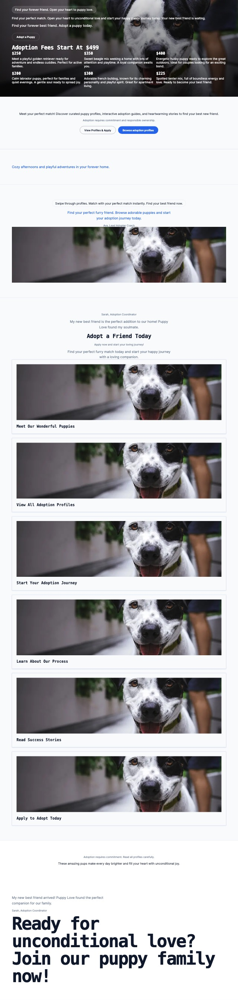
puppy: the model's decisions, round 0 score 21.5
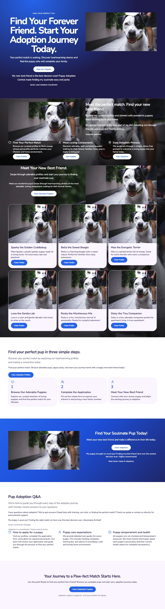
So the defect score is used only to compare rounds of one page. An outline judge (the reviewer reading the page's section list) points the right way, if weakly: well organised, P(yes) 0.52 random, 0.63 the model's first build, 0.67 the kept round.
Session 1 pages, before and after review
Each frame scrolls. Left: the first build, what a one-pass harness (OWN-027) would hand over. Right: the round the agent kept.
puppy
“Make me a puppy adoption landing page please, blue colour theme, modern style.”
score by round
27.7 → 11.16 → 9.44 → 11.42 → 10.54
kept
round 2
builder calls
111
reviewer tokens
105
free replays
259
minutes
8.9
Photos the reviewer kept: kept animal-dog.webp of 32. Facts it set itself to show: “puppy adoption landing page”, “blue colour theme”, “modern style”.
Round 0 score 27.7
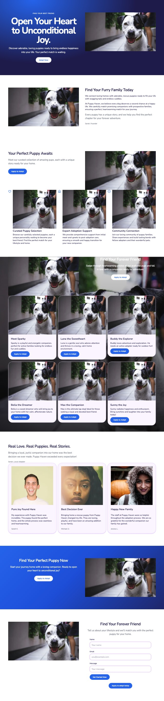
Round 2, kept score 9.44
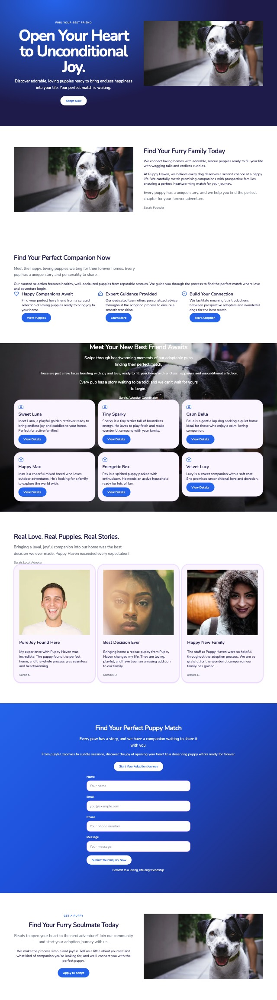
What the agent found in round 0, and what it fixed (12 of 15)
fixed the list in "feature cards" shows the same photo 3 times re-ask a decision
fixed the list in "gallery" shows the same photo 6 times re-ask a decision
fixed "animal-dog.webp" appears 15 times on the page re-ask a decision
fixed "animal-dog.webp" appears 15 times on the page re-ask a decision
fixed "animal-dog.webp" appears 15 times on the page re-ask a decision
still open "animal-dog.webp" appears 15 times on the page re-ask a decision
fixed "Apply to Adopt" repeats "Apply to Adopt" re-word a line
fixed "Apply to Adopt" repeats "Apply to Adopt" re-word a line
fixed "Start your journey home with a loving companion. Ready to open your heart to unconditional joy?" repeats "Open Your Heart to Unconditional Joy." re-word a line
fixed "Find Your Forever Friend" repeats "Find Your Forever Friend" re-word a line
fixed "apply to adopt" is said 10 times on the page re-word a line
fixed "apply to adopt" is said 10 times on the page re-word a line
fixed "apply to adopt" is said 10 times on the page re-word a line
still open reviewer: organised p=0.865
still open reviewer: type and parts suit p=0.97
The page in words, as the reviewer read it (round 2)
Section "hero" (dark band). Top to bottom:
- eyebrow: "Find Your Best Friend"
- headline: "Open Your Heart to Unconditional Joy."
- sub-line: "Discover adorable, loving puppies ready to bring endless happiness into your life. Your perfect match is waiting."
- button: "Adopt Now"
- a photo (animal-dog.webp)
Section "about" (light band). Top to bottom:
- a photo (animal-dog.webp)
- headline: "Find Your Furry Family Today"
- sub-line: "We connect loving homes with adorable, rescue puppies ready to fill your life with wagging tails and endless cuddles."
- paragraph: "At Puppy Haven, we believe every dog deserves a second chance at a happy life. We carefully match promising companions with prospective families, ensuring a perfect, heartwarming match for your journey."
- quote: "Every puppy has a unique story, and we help you find the perfect chapter for your forever adventure."
- who said it: a name and a role: "Sarah, Founder"
Section "feature cards" (light band). Top to bottom:
- headline: "Find Your Perfect Companion Now"
- sub-line: "Meet the happy, loving puppies waiting for their forever homes. Every pup has a unique story and personality to share."
- paragraph: "Our curated selection features healthy, well-socialized puppies from reputable rescues. We guide you through the process to find the perfect match where love and adventure begin."
- 3 featureItems in a grid, each: icon, title, sentence or two, button:
1. "Happy Companions Await" — "Find your perfect furry friend from a curated selection of loving puppies ready to bring joy to your home." — "View Puppies"
2. "Expert Guidance Provided" — "Our dedicated team offers personalized advice throughout the adoption process to ensure a smooth transition." — "Learn More"
3. "Build Your Connection" — "We facilitate meaningful introductions between prospective adopters and wonderful dogs for the best match." — "Start Adoption"
Section "gallery" (dark band). Top to bottom:
- headline: "Meet Your New Best Friend Awaits"
- sub-line: "Swipe through heartwarming moments of our adoptable pups finding their perfect match."
- paragraph: "These are just a few faces bursting with joy and love, ready to fill your home with endless happiness and unconditional affection."
- quote: "Every pup has a story waiting to be told, and we can't wait for yours to begin."
- who said it: a name and a role: "Sarah, Adoption Coordinator"
- 6 cards in a grid, each: icon, title, sentence or two, button:
1. "Sweet Luna" — "Meet Luna, a playful golden retriever ready to bring endless joy and cuddles to your home. Perfect for active families!" — "View Details"
2. "Tiny Sparky" — "Sparky is a tiny terrier full of boundless energy. He loves to play fetch and make wonderful company with your family." — "View Details"
3. "Calm Bella" — "Bella is a gentle lap dog seeking a quiet home. Ideal for those who enjoy a calm, loving companion." — "View Details"
4. "Happy Max" — "Max is a cheerful mixed breed who loves outdoor adventures. He's looking for a family to explore the world with." — "View Details"
5. "Energetic Rex" — "Rex is a spirited puppy packed with enthusiasm. He needs an active household ready for lots of fun." — "View Details"
6. "Velvet Lucy" — "Lucy is a sweet companion with a soft coat. She promises unconditional love and devotion." — "View Details"
Section "testimonials" (light band). Top to bottom:
- headline: "Real Love. Real Puppies. Real Stories."
- quote: "Bringing a loyal, joyful companion into our home was the best decision we ever made. Puppy Haven exceeded every expectation!"
- who said it: a name and a role: "Sarah, Local Adopter"
- 3 testimonialCards in a grid, each: photo, title, sentence or two, a name and a role:
1. "Pure Joy Found Here" — "My experience with Puppy Haven was incredible. The puppy found the perfect home, and the whole process was seamless and heartwarming." — "Sarah K."
2. "Best Decision Ever" — "Bringing home a rescue puppy from Puppy Haven changed my life. They are loving, playful, and have been an amazing addition to our family." — "Michael D."
3. "Happy New Family" — "The staff at Puppy Haven were so helpful throughout the adoption process. We are so grateful for the wonderful companion our family has gained." — "Jessica L."
Section "call to action" (dark band). Top to bottom:
- headline: "Find Your Perfect Puppy Match"
- sub-line: "Every paw has a story, and we have a companion waiting to share it with you."
- paragraph: "From playful zoomies to cuddle sessions, discover the joy of opening your heart to a deserving puppy who's ready for forever."
- button: "Start Your Adoption Journey"
- a form field: "Name" / "Your name"
- a form field: "Email" / "you@example.com"
- a form field: "Phone" / "Your phone number"
- a form field: "Message" / "Your message"
- button: "Submit Your Inquiry Now"
- small print: "Commit to a loving, lifelong friendship."
Section "sign-up or contact form" (light band). Top to bottom:
- eyebrow: "Get a Puppy"
- headline: "Find Your Furry Soulmate Today"
- sub-line: "Ready to open your heart to the next adventure? Join our community and start your adoption journey with us."
- paragraph: "We make the process simple and joyful. Tell us a little about yourself and what kind of companion you're looking for, and we'll connect you with the perfect puppy."
- button: "Apply to Adopt"
- a photo (animal-dog.webp)
bakery
“A one-page site for our family bakery in Lyon. Warm colours. We sell sourdough, croissants and cakes, open Tuesday to Sunday.”
score by round
30.01 → 21.9 → 16.58 → 22.38 → 11.24
kept
round 4
builder calls
133
reviewer tokens
136
free replays
250
minutes
10.2
Photos the reviewer kept: kept food-bakery.webp, food-bread.webp of 32. Facts it set itself to show: “family bakery”, “Lyon”, “sourdough”, “croissants and cakes”.
Round 0 score 30.01
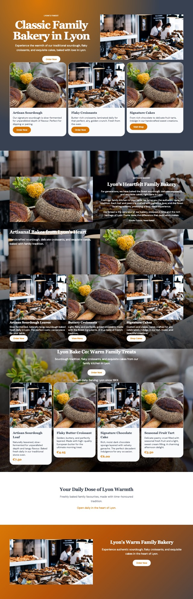
Round 4, kept score 11.24
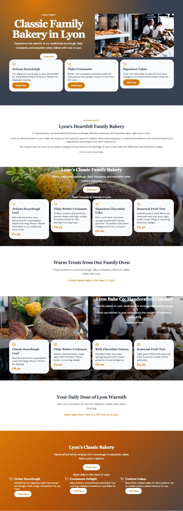
What the agent found in round 0, and what it fixed (13 of 15)
fixed the list in "feature cards" shows the same photo 2 times re-ask a decision
fixed the list in "menu or prices" shows the same photo 2 times re-ask a decision
fixed "food-bakery.webp" appears 7 times on the page re-ask a decision
fixed the list in "hero" shows the same photo 2 times re-ask a decision
fixed "food-bread.webp" appears 7 times on the page re-ask a decision
fixed "food-bread.webp" appears 7 times on the page re-ask a decision
fixed "Signature Cakes" repeats "Signature Cakes" re-word a line
fixed three dark bands in a row flip to 2nd choice
fixed three dark bands in a row flip to 2nd choice
fixed "croissants and exquisite" is said 5 times on the page re-word a line
fixed "croissants and exquisite" is said 5 times on the page re-word a line
fixed "croissants and exquisite" is said 5 times on the page re-word a line
fixed reviewer (p=0.666): "Open daily in the heart of Lyon." contradicts the request or invents a detail re-word a line
still open reviewer: organised p=0.828
still open reviewer: type and parts suit p=0.882
The page in words, as the reviewer read it (round 4)
Section "hero" (dark band). Top to bottom:
- eyebrow: "Lyon's Finest"
- headline: "Classic Family Bakery in Lyon"
- sub-line: "Experience the warmth of our traditional sourdough, flaky croissants, and exquisite cakes, baked with love in Lyon."
- button: "Order Now"
- a photo (food-bakery.webp)
- 3 cards in a grid, each: icon, title, sentence or two, button:
1. "Artisan Sourdough" — "Our signature sourdough is slow-fermented for unparalleled depth of flavour. Perfect for dipping or pairing." — "Order Now"
2. "Flaky Croissants" — "Butter-rich croissants, laminated daily for that perfect, airy, golden crunch. Fresh from the oven." — "Order Now"
3. "Signature Cakes" — "From rich chocolate to delicate fruit tarts, indulge in our handcrafted sweet creations." — "Visit Shop"
Section "about" (light band). Top to bottom:
- eyebrow: "Artisan Bakery"
- headline: "Lyon's Heartfelt Family Bakery"
- sub-line: "For generations, we have baked the finest sourdough, delicate croissants, and exquisite cakes, right here in Lyon."
- paragraph: "From our family kitchen to your table, we bring you the authentic taste of tradition. Each loaf and pastry is crafted with patience, love, and the finest local ingredients, promising a truly warm experience."
- quote: "Our bread is the very soul of our bakery, steeped in time and the rich heritage of Lyon. Come taste the difference that dedication makes."
- who said it: a name and a role: "Elodie Dubois, Head Baker"
Section "menu or prices" (dark band). Top to bottom:
- headline: "Lyon's Classic Family Bakery"
- sub-line: "Warm, traditional sourdough, flaky croissants, and exquisite cakes crafted with love."
- button: "Order Now"
- date and place: "Open Tuesday to Sunday in Lyon."
- 4 cards in a grid, each: icon, title, sentence or two, price:
1. "Artisan Sourdough Loaf" — "Naturally leavened, slow-fermented for unparalleled depth and tangy flavour. Baked fresh daily in our traditional stone oven." — "€7.50"
2. "Flaky Butter Croissant" — "Golden, buttery, and perfectly layered. Made with high-quality European butter for the ultimate morning treat." — "€4.25"
3. "Signature Chocolate Cake" — "Rich, moist dark chocolate sponge layered with velvety ganache. The perfect decadent indulgence for any occasion." — "€6.00"
4. "Seasonal Fruit Tart" — "Delicate pastry crust filled with seasonal fresh fruit and a light, sweet cream filling. A charming afternoon delight." — "€5.50"
Section "schedule or line-up" (light band). Top to bottom:
- headline: "Warm Treats from Our Family Oven"
- sub-line: "Enjoy authentic Lyon sourdough, flaky croissants, and rich cakes made with love."
- date and place: "Freshly baked daily in the heart of Lyon."
Section "gallery" (dark band). Top to bottom:
- a photo (food-bread.webp)
- headline: "Lyon Bake Co: Handcrafted Comfort"
- sub-line: "A family bakery in Lyon, dedicated to timeless, fresh baked goods."
- quote: "From our kitchen to your table, savor the tradition of authentic Lyon baking."
- who said it: a name and a role: "Marie, Master Baker"
- 4 cards in a grid, each: icon, title, sentence or two, price:
1. "Classic Sourdough Loaf" — "Slow fermented for unparalleled crust and tangy flavour. Perfect for dipping." — "€8.50"
2. "Flaky Butter Croissant" — "Golden, layered pastry made daily with the finest French butter. A morning delight." — "€3.50"
3. "Rich Chocolate Gateau" — "Decadent dark chocolate sponge layered with velvety ganache. A true indulgence." — "€6.00"
4. "Seasonal Fruit Tart" — "Light pastry filled with seasonal, fresh fruit and a sweet crème pâtissière." — "€4.50"
Section "location and hours" (light band). Top to bottom:
- headline: "Your Daily Dose of Lyon Warmth"
- sub-line: "Visit us in the heart of Lyon for tradition, made fresh every morning."
- date and place: "Open daily from 7 AM to 4 PM. Find us in Lyon."
Section "call to action" (dark band). Top to bottom:
- headline: "Lyon's Classic Bakery"
- sub-line: "Handcrafted family recipes, from sourdough to exquisite cakes. Taste Lyon's tradition."
- button: "Order Now"
- date and place: "Open daily in the heart of Lyon."
- 3 featureItems in a grid, each: icon, title, sentence or two, button:
1. "Order Sourdough" — "Experience our signature slow-fermented sourdough. Fresh, tangy, and perfect for any meal." — "Order Now"
2. "Croissants Delight" — "Flaky, buttery, and perfectly laminated. Your morning indulgence awaits at Lyon Bake Co." — "Order Now"
3. "Custom Cakes" — "Beautifully crafted cakes for all occasions. Let us create a warm, sweet memory for you." — "Visit Shop"
running
“A sign-up page for a Saturday morning running club in the park. Energetic, green.”
score by round
28.9 → 17.39 → 10.23 → 7.77 → 11.37
kept
round 3
builder calls
68
reviewer tokens
112
free replays
206
minutes
6.9
Photos the reviewer kept: kept ground-coast.webp, animal-dog.webp, animal-sheep.webp of 32. Facts it set itself to show: “Saturday morning running club”, “in the park”.
Round 0 score 28.9
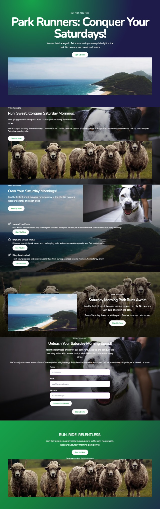
Round 3, kept score 7.77
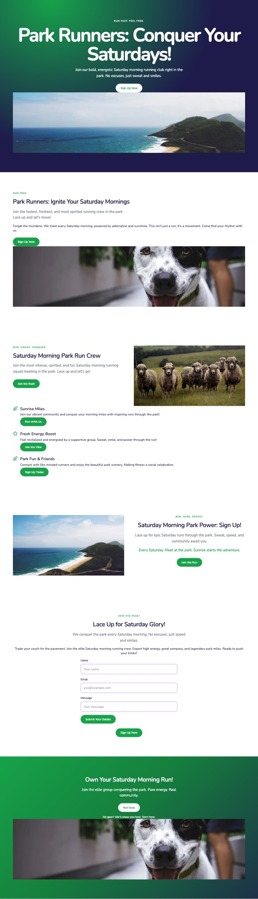
What the agent found in round 0, and what it fixed (11 of 16)
fixed three dark bands in a row flip to 2nd choice
fixed three dark bands in a row flip to 2nd choice
fixed three dark bands in a row flip to 2nd choice
fixed three dark bands in a row flip to 2nd choice
fixed "in the park" is said 4 times on the page re-word a line
fixed "in the park" is said 4 times on the page re-word a line
fixed "no excuses just" is said 4 times on the page re-word a line
fixed "sign up now" is said 7 times on the page re-word a line
fixed "sign up now" is said 7 times on the page re-word a line
still open four "imageGround" bands in a row flip to 2nd choice
fixed reviewer (p=0.157): weakest line paragraph "We're not just running; we're building a community" re-word a line
fixed reviewer (p=0.308): weakest line sub-line "Join the fastest, most dynamic running crew in the" re-word a line
still open reviewer (p=0.086): weakest line sub-line "Join the relentless energy of our park runs. Lace " re-word a line
still open reviewer (p=0.126): weakest line sub-line "Join the fastest, most dynamic running crew in the" re-word a line
still open reviewer: organised p=0.866
still open reviewer: type and parts suit p=0.91
The page in words, as the reviewer read it (round 3)
Section "hero" (dark band). Top to bottom:
- eyebrow: "Run Fast. Feel Free."
- headline: "Park Runners: Conquer Your Saturdays!"
- sub-line: "Join our bold, energetic Saturday morning running club right in the park. No excuses, just sweat and smiles."
- button: "Sign Up Now"
- a photo (ground-coast.webp)
Section "about" (light band). Top to bottom:
- eyebrow: "Run Free"
- headline: "Park Runners: Ignite Your Saturday Mornings"
- sub-line: "Join the fastest, freshest, and most spirited running crew in the park. Lace up and let's move!"
- paragraph: "Forget the mundane. We meet every Saturday morning, powered by adrenaline and sunshine. This isn't just a run; it's a movement. Come find your rhythm with us."
- button: "Sign Up Now"
- a photo (animal-dog.webp)
Section "feature cards" (light band). Top to bottom:
- eyebrow: "Run. Sweat. Conquer."
- headline: "Saturday Morning Park Run Crew"
- sub-line: "Join the most intense, spirited, and fun Saturday morning running squad meeting in the park. Lace up and let's go!"
- button: "Join the Rush"
- a photo (animal-sheep.webp)
- 3 featureItems in a single column, each: icon, title, sentence or two, button:
1. "Sunrise Miles" — "Join our vibrant community and conquer your morning miles with inspiring runs through the park!" — "Run With Us"
2. "Fresh Energy Boost" — "Feel revitalized and energized by a supportive group. Sweat, smile, and power through the run!" — "Join the Vibe"
3. "Park Fun & Friends" — "Connect with like-minded runners and enjoy the beautiful park scenery. Making fitness a social celebration." — "Sign Up Today"
Section "location and hours" (light band). Top to bottom:
- a photo (ground-coast.webp)
- eyebrow: "RUN. PARK. REPEAT."
- headline: "Saturday Morning Park Power: Sign Up!"
- sub-line: "Lace up for epic Saturday runs through the park. Sweat, speed, and community await you."
- date and place: "Every Saturday. Meet at the park. Sunrise starts the adventure."
- button: "Join the Run"
Section "sign-up or contact form" (light band). Top to bottom:
- eyebrow: "Join the Pack!"
- headline: "Lace Up for Saturday Glory!"
- sub-line: "We conquer the park every Saturday morning. No excuses, just speed and smiles."
- paragraph: "Trade your couch for the pavement. Join the elite Saturday morning running crew. Expect high energy, great company, and legendary park miles. Ready to push your limits?"
- a form field: "Name" / "Your name"
- a form field: "Email" / "you@example.com"
- a form field: "Message" / "Your message"
- button: "Submit Your Details"
- button: "Sign Up Now"
Section "call to action" (dark band). Top to bottom:
- headline: "Own Your Saturday Morning Run!"
- sub-line: "Join the elite group conquering the park. Pure energy. Real community."
- button: "Run Now"
- small print: "No gear? We'll show you how. Start here."
- a photo (animal-dog.webp)
jazz
“A page for a jazz evening on 14 November at The Blue Room: the line-up, tickets and how to get there. Dark and elegant.”
score by round
32.9 → 39.25 → 28.79 → 23.15 → 28.92
kept
round 3
builder calls
118
reviewer tokens
134
free replays
225
minutes
8.4
Photos the reviewer kept: kept none of 32. Facts it set itself to show: “jazz evening”, “14 November”, “The Blue Room”, “line-up, tickets and how to get there”.
Round 0 score 32.9
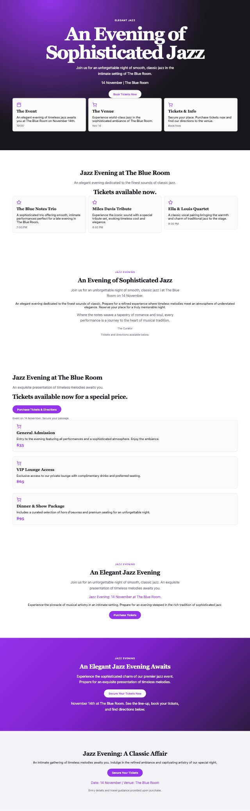
Round 3, kept score 23.15
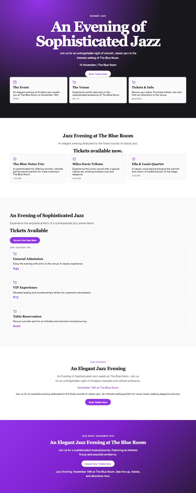
What the agent found in round 0, and what it fixed (7 of 15)
fixed "An Evening of Sophisticated Jazz" repeats "An Evening of Sophisticated Jazz" re-word a line
still open "Jazz Evening at The Blue Room" repeats "Jazz Evening at The Blue Room" re-word a line
fixed button "Purchase Tickets & Directions" is too long for a button re-word a line
still open "Join us for an unforgettable night of smooth, classic jazz. An exquisite presentation of timeless melodies awaits you." repeats "An exquisite presentation of timeless melodies awaits you." re-word a line
fixed "an unforgettable night" is said 4 times on the page re-word a line
still open "an unforgettable night" is said 4 times on the page re-word a line
fixed "at the blue" is said 6 times on the page re-word a line
fixed "at the blue" is said 6 times on the page re-word a line
still open "at the blue" is said 6 times on the page re-word a line
fixed four "band" bands in a row flip to 2nd choice
still open render: single-column-grid
still open reviewer (p=0.838): add a "sign-up or contact form" section add a section
fixed reviewer (p=0.803): drop section 3. about drop a section
still open reviewer: organised p=0.264 re-ask a decision
still open reviewer: type and parts suit p=0.854
The page in words, as the reviewer read it (round 3)
Section "hero" (dark band). Top to bottom:
- eyebrow: "Elegant Jazz"
- headline: "An Evening of Sophisticated Jazz"
- sub-line: "Join us for an unforgettable night of smooth, classic jazz in the intimate setting of The Blue Room."
- date and place: "14 November | The Blue Room"
- button: "Book Tickets Now"
- 3 cards in a grid, each: icon, title, sentence or two, time or date:
1. "The Event" — "An elegant evening of timeless jazz awaits you at The Blue Room on November 14th." — "19:00"
2. "The Venue" — "Experience world-class jazz in the sophisticated ambiance of The Blue Room." — "Nov 14"
3. "Tickets & Info" — "Secure your place. Purchase tickets now and find our directions to the venue." — "Book Now"
Section "schedule or line-up" (light band). Top to bottom:
- headline: "Jazz Evening at The Blue Room"
- sub-line: "An elegant evening dedicated to the finest sounds of classic jazz."
- price: "Tickets available now."
- 3 cards in a grid, each: icon, title, sentence or two, time or date:
1. "The Blue Notes Trio" — "A sophisticated trio offering smooth, intimate performances perfect for a late evening in The Blue Room." — "7:00 PM"
2. "Miles Davis Tribute" — "Experience the iconic sound with a special tribute set, evoking timeless cool and elegance." — "8:30 PM"
3. "Ella & Louis Quartet" — "A classic vocal pairing bringing the warmth and charm of traditional jazz to the stage." — "9:30 PM"
Section "menu or prices" (light band). Top to bottom:
- headline: "An Evening of Sophisticated Jazz"
- sub-line: "Experience the exquisite artistry of a quintessential jazz presentation."
- price: "Tickets Available"
- button: "Secure Your Seat Now"
- small print: "Date: November 14th"
- 3 cards in a single column, each: icon, title, sentence or two, price:
1. "General Admission" — "Enjoy the evening with entry to the venue. A classic experience." — "$45"
2. "VIP Experience" — "Elevated seating and complimentary drinks for a premium atmosphere." — "$75"
3. "Table Reservation" — "Secure a private spot for an intimate and exclusive musical journey." — "$120"
Section "location and hours" (light band). Top to bottom:
- eyebrow: "Jazz Evening"
- headline: "An Elegant Jazz Evening"
- sub-line: "An Evening of Sophisticated Jazz awaits at The Blue Room. Join us for an unforgettable night of timeless melodies and refined ambiance."
- date and place: "November 14th at The Blue Room"
- paragraph: "Join us for an exquisite evening dedicated to the finest sounds of classic jazz. An intimate setting perfect for music lovers seeking elegance and soul."
- button: "Book Tickets Now"
Section "call to action" (dark band). Top to bottom:
- eyebrow: "Jazz Night: November 14th"
- headline: "An Elegant Jazz Evening at The Blue Room"
- sub-line: "Join us for a sophisticated musical journey. Featuring an intimate lineup and exquisite ambiance."
- button: "Secure Your Tickets Now"
- date and place: "Jazz Evening: November 14th at The Blue Room. See line-up, tickets, and directions here."
pottery
“A portfolio page for a potter who sells handmade bowls and teaches weekend classes. Minimal, lots of white space.”
score by round
17.59 → 7.52 → 2.64 → 3.02 → 2.94
kept
round 2
builder calls
64
reviewer tokens
102
free replays
182
minutes
5.4
Photos the reviewer kept: kept work-potter.webp, work-hands-clay.webp, people-market.webp of 32. Facts it set itself to show: “sells handmade bowls”, “teaches weekend classes”.
Round 0 score 17.59
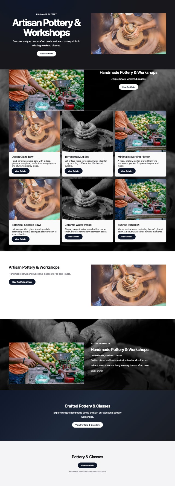
Round 2, kept score 2.64
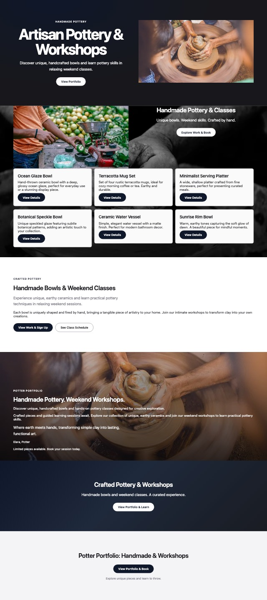
What the agent found in round 0, and what it fixed (8 of 10)
fixed the list in "gallery" shows the same photo 2 times re-ask a decision
fixed "work-potter.webp" appears 4 times on the page re-ask a decision
fixed "people-market.webp" appears 4 times on the page re-ask a decision
fixed "View Portfolio" repeats "View Portfolio" re-word a line
fixed "Artisan Pottery & Workshops" repeats "Artisan Pottery & Workshops" re-word a line
fixed "Handmade Pottery & Workshops" repeats "Handmade Pottery & Workshops" re-word a line
fixed button "View Portfolio & Class Info" is too long for a button re-word a line
fixed "View Portfolio" repeats "View Portfolio" re-word a line
still open reviewer: organised p=0.938
still open reviewer: type and parts suit p=0.977
The page in words, as the reviewer read it (round 2)
Section "hero" (dark band). Top to bottom:
- eyebrow: "Handmade Pottery"
- headline: "Artisan Pottery & Workshops"
- sub-line: "Discover unique, handcrafted bowls and learn pottery skills in relaxing weekend classes."
- button: "View Portfolio"
- a photo (work-potter.webp)
Section "gallery" (dark band). Top to bottom:
- a photo (people-market.webp)
- headline: "Handmade Pottery & Classes"
- sub-line: "Unique bowls. Weekend skills. Crafted by hand."
- button: "Explore Work & Book"
- 6 cards in a grid, each: title, sentence or two, button:
1. "Ocean Glaze Bowl" — "Hand-thrown ceramic bowl with a deep, glossy ocean glaze, perfect for everyday use or a stunning display piece." — "View Details"
2. "Terracotta Mug Set" — "Set of four rustic terracotta mugs, ideal for cozy morning coffee or tea. Earthy and durable." — "View Details"
3. "Minimalist Serving Platter" — "A wide, shallow platter crafted from fine stoneware, perfect for presenting curated meals." — "View Details"
4. "Botanical Speckle Bowl" — "Unique speckled glaze featuring subtle botanical patterns, adding an artistic touch to your collection." — "View Details"
5. "Ceramic Water Vessel" — "Simple, elegant water vessel with a matte finish. Perfect for modern bathroom decor." — "View Details"
6. "Sunrise Rim Bowl" — "Warm, earthy tones capturing the soft glow of dawn. A beautiful piece for mindful moments." — "View Details"
Section "feature cards" (light band). Top to bottom:
- eyebrow: "Crafted Pottery"
- headline: "Handmade Bowls & Weekend Classes"
- sub-line: "Experience unique, earthy ceramics and learn practical pottery techniques in relaxing weekend sessions."
- paragraph: "Each bowl is uniquely shaped and fired by hand, bringing a tangible piece of artistry to your home. Join our intimate workshops to transform clay into your own creations."
- button: "View Work & Sign Up"
- button: "See Class Schedule"
Section "about" (dark band). Top to bottom:
- eyebrow: "Potter Portfolio"
- headline: "Handmade Pottery. Weekend Workshops."
- sub-line: "Discover unique, handcrafted bowls and hands-on pottery classes designed for creative exploration."
- paragraph: "Crafted pieces and guided learning sessions await. Explore our collection of unique, earthy ceramics and join our weekend workshops to learn practical pottery skills."
- quote: "Where earth meets hands, transforming simple clay into lasting, functional art."
- who said it: a name and a role: "Elara, Potter"
- small print: "Limited pieces available. Book your session today."
Section "call to action" (dark band). Top to bottom:
- headline: "Crafted Pottery & Workshops"
- sub-line: "Handmade bowls and weekend classes. A curated experience."
- button: "View Portfolio & Learn"
Section "footer" (light band). Top to bottom:
- headline: "Potter Portfolio: Handmade & Workshops"
- button: "View Portfolio & Book"
- small print: "Explore unique pieces and learn to throw."
plumber
“A simple page for my plumbing business so customers can ask for a call-back. Trustworthy, blue.”
score by round
34.77 → 19.23 → 16.82 → 5.61
kept
round 3
builder calls
113
reviewer tokens
100
free replays
151
minutes
8.9
Photos the reviewer kept: kept none of 32. Facts it set itself to show: “plumbing business”, “customers can ask for a call-back”, “Trustworthy”, “blue”.
Round 0 score 34.77
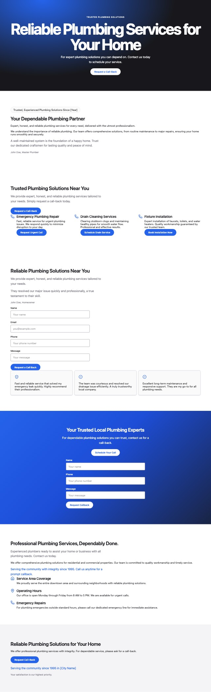
Round 3, kept score 5.61
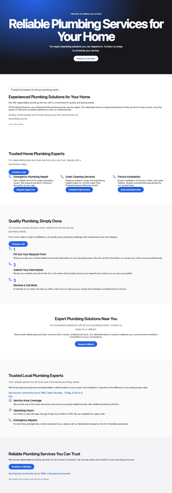
What the agent found in round 0, and what it fixed (10 of 13)
fixed "Trusted, Experienced Plumbing Solutions Since [Year]" talks about the page instead of to the visitor re-word a line
fixed "Trusted Plumbing Solutions Near You" repeats "Trusted Plumbing Solutions" re-word a line
fixed "We provide expert, honest, and reliable plumbing services tailored to your needs." repeats "We provide expert, honest, and reliable plumbing services tailored to your needs. Simply request a call-back today." re-word a line
fixed "Request Call-Back" repeats "Request Callback" re-word a line
fixed "Serving the community since 1995 in [City Name]" talks about the page instead of to the visitor re-word a line
fixed a second form (already in "testimonials") re-ask a decision
fixed "reliable plumbing services" is said 4 times on the page re-word a line
fixed "reliable plumbing services" is said 4 times on the page re-word a line
still open render: minimum-layout-width
fixed reviewer (p=0.736): add a "sign-up or contact form" section add a section
fixed reviewer (p=0.846): drop section 3. feature cards drop a section
still open reviewer: organised p=0.175 re-ask a decision
still open reviewer: type and parts suit p=0.893
The page in words, as the reviewer read it (round 3)
Section "hero" (dark band). Top to bottom:
- eyebrow: "Trusted Plumbing Solutions"
- headline: "Reliable Plumbing Services for Your Home"
- sub-line: "For expert plumbing solutions you can depend on. Contact us today to schedule your service."
- button: "Request a Call-Back"
Section "about" (light band). Top to bottom:
- badge: "Trusted local experts for all your plumbing needs."
- headline: "Experienced Plumbing Solutions for Your Home"
- sub-line: "We offer dependable plumbing services with a commitment to quality and lasting results."
- paragraph: "At Plumbing Solutions, we understand that plumbing issues can be urgent. Our dedicated team provides professional, timely service for every home, ensuring peace of mind and complete satisfaction with our craftsmanship."
- quote: "Quality workmanship and honest service are the cornerstones of everything we do."
- who said it: a name and a role: "John Doe, Owner"
Section "feature cards" (light band). Top to bottom:
- headline: "Trusted Home Plumbing Experts"
- sub-line: "For dependable pipe and drain services you can trust. Speak with a technician today."
- button: "Schedule a Call"
- 3 featureItems in a grid, each: icon, title, sentence or two, button:
1. "Emergency Plumbing Repair" — "Fast, reliable service for urgent plumbing issues. We respond quickly to minimize disruption to your day." — "Request Urgent Call"
2. "Drain Cleaning Services" — "Clearing stubborn clogs and maintaining healthy pipes for smooth water flow. Professional and effective results." — "Schedule Drain Service"
3. "Fixture Installation" — "Expert installation of faucets, toilets, and water heaters. Quality workmanship guaranteed by our trusted team." — "Book Installation Now"
Section "how it works" (light band). Top to bottom:
- headline: "Quality Plumbing, Simply Done."
- sub-line: "Our proven process ensures swift, reliable service for all your plumbing needs."
- paragraph: "From minor leaks to major installations, we handle every plumbing challenge with professional care and integrity."
- button: "Arrange a Call"
- 3 featureItems in a single column, each: icon, step number, title, sentence or two:
1. "1" — "Fill Out Your Request Form" — "Simply provide your contact details and a brief description of your plumbing issue. We will use this information to connect you with a service professional."
2. "2" — "Submit Your Information" — "Review your details and submit the form. Our team will promptly receive your request and contact you as soon as possible."
3. "3" — "Receive a Call Back" — "A member of our team will call you within a few hours to discuss your needs and schedule a suitable time for service."
Section "sign-up or contact form" (light band). Top to bottom:
- headline: "Expert Plumbing Solutions Near You"
- sub-line: "For immediate assistance with all your plumbing needs. Contact us today for a callback."
- paragraph: "We provide reliable pipe and drain services with a classic, professional touch. Our dedicated team is ready to address your concerns and schedule a consultation at your convenience."
- button: "Request Callback"
Section "location and hours" (light band). Top to bottom:
- headline: "Trusted Local Plumbing Experts"
- sub-line: "Your reliable partner for all home and commercial plumbing needs."
- paragraph: "We bring seasoned expertise and dependable craftsmanship to every repair and installation. Experience the difference true professionals make."
- date and place: "Serving the community since 1985. Open Monday - Friday, 8 AM to 5 PM."
- 3 featureItems in a single column, each: icon, title, sentence or two:
1. "Service Area Coverage" — "We proudly serve the entire downtown area and surrounding neighborhoods with reliable plumbing solutions."
2. "Operating Hours" — "Our office is open Monday through Friday from 8 AM to 5 PM. We are available for urgent calls."
3. "Emergency Repairs" — "For plumbing emergencies outside standard hours, please call our dedicated emergency line for immediate assistance."
Section "footer" (light band). Top to bottom:
- headline: "Reliable Plumbing Services You Can Trust"
- paragraph: "We provide dependable plumbing services for your home or business. Let us bring clarity and comfort to your plumbing concerns."
- button: "Schedule a Call-Back"
- date and place: "Serving the community since 1995. Licensed and insured."
- small print: "We respect your privacy and call you promptly."